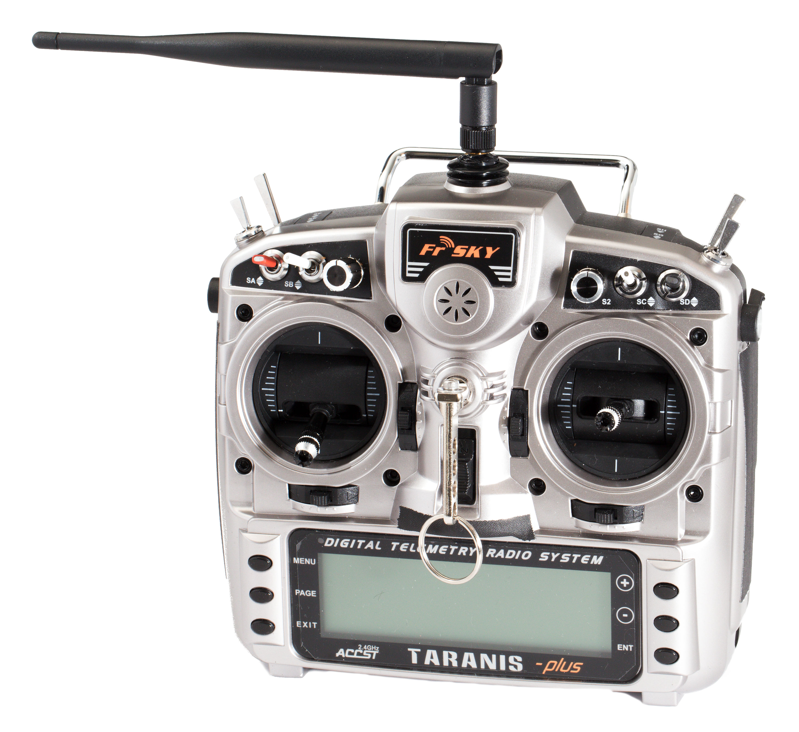
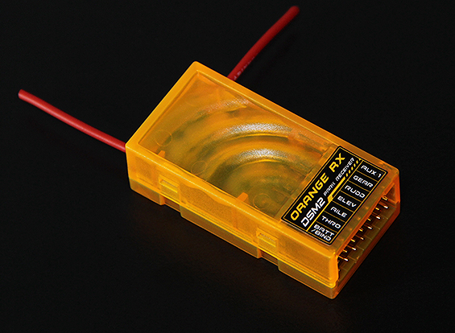

Welcome to the Components Page
This page will describe the many components used in remote control planes.
Remote control planes need certain electrical components to be able to propel themselves and be remotely controlled by transmitters. This page will describe the main purpose of all the different bit and pieces.
Transmitter
The transmitter is the main interface that is used while flying. It binds to the receiver and sends your input to it. You move the control sticks to direct the aircraft while several other buttons and switches can be programmed for various other things, such as retractable landing gear, autonomous flight, camera, etc. They support a certain number of channels from 4CH+. The more channels your transmitter (and receiver) supports the more components can be connected to your receiver. They are often referred to as a remote control and come in many brands however the most reputable is Spektrum.
Reciever
The receiver is the component that controls and powers all the components on board the aircraft, such as the servos, motors, and esc. It binds directly with the transmitter and often contains a gyroscope to stabilize the aircraft and counters wind gusts and propeller movement. It has several plugs depending on the number of channels it supports. It will also connect to the battery with a separate plug. The battery does not take up any channels.

Electrical Speed Controller
The electrical speed controller regulates the speed of an electrical motor. There are generally two types of ESC’s when it come to remote control aircraft. Brushed DC ESC and brushless DC ESC. Brushed ESC’s are mostly simple, control the voltage and amperage to control the speed of the motor. However, the most common are brushless ESC’s due to brushless motors being lighter, power efficient and long-life span. Brushless ESC’s are far more complicated though. The correct phase varies with the motor rotation, which is to be considered by the ESC: Usually, back EMF from the motor is used to detect this rotation, but variations exist that use magnetic (Hall effect) or optical detectors. Computer-programmable speed controls generally have user-specified options which allow setting low voltage cut-off limits, timing, acceleration, braking and direction of rotation. Reversing the motor's direction may also be accomplished by switching any two of the three leads from the ESC to the motor.

Electrical Motors
The electrical motor is what propels the entire aircraft. Its speed is regulated by the ESC and determined by the pilot (generally you). A propeller (prop) is attached by a prop adapter and several screws to ensure the prop is attached safely and will not slide around or come off during flight. Basically, all electrical motors are powered by permanent magnets and electromagnets. Remember that like magnetic poles repel and opposites attract. The permanent magnets are located on the outer casing, while the electromagnets are located on the shaft. On a brushed motor the electromagnets require “brushes” to conduct the power required to rotate. The main difference between brushed and brushless motors is that brushless motors have their permanent magnets rotate and their electromagnets stay fixed. This leads to a far more efficient motor and removes the brushes that wore out and created unwanted friction inside the motor.

Servomechanism
Servomechanisms, or more commonly servos, are the most abundant component in a remote-control plane. Put simply, servos are mechanical devices that push and pull on wires to raise and lower the flaps and rudder. This movement is proportional, meaning that the servo will only move as much as the transmitter stick on your radio is moved, or as much as the gyro system instructs it to move.
Batterys
The battery is the primary power source of the aircraft. It has many different types however I will only cover Lithium Polymer batteries (or LiPo) as they are the most widely used. A LiPo battery is much more lightweight than the previous battery that was used, NiMH Batteries. A LiPo battery can be defined by many characteristics. There is the discharge rating (c), the cell count and voltage (2s, 7.4v), and the capacity (5000mAh). A LiPo cell has a nominal voltage of 3.7v. For a 2s, 2 cells, battery it will have 7.4v, a 3s, 3 cells, battery has 11.1v and so on. The “s” in 2 cell means 2 cells in Series. The capacity of a battery just means how much power the battery can hold. It's like a fuel tank, the more fuel you have the longer you can drive for. LiPo battery capacity is measured in milliamp hours (mAh) and the more mAh’s you have the longer your plane can fly for. However, the more mAh’s you have the heavier your aircraft is.

Made by Luke Finlayson and Jeff Lester
Copyright and Licensing
WARNING
This website is still in development. You may experience bugs, missing content, funny cat memes, and possibly Jeff's...Lets not talk about that. You have been warned. Click anywhere to continue.
WARNING
This website is still in development. You may experience bugs, missing content, funny cat memes, and possibly Jeff's...Lets not talk about that. You have been warned. Click anywhere to continue.